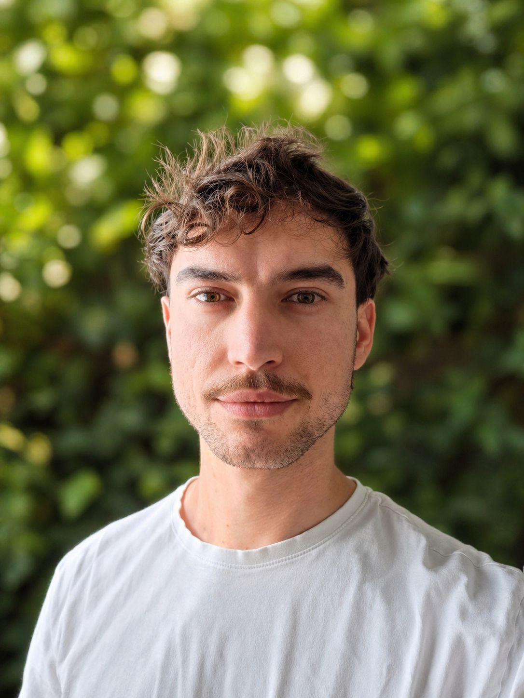
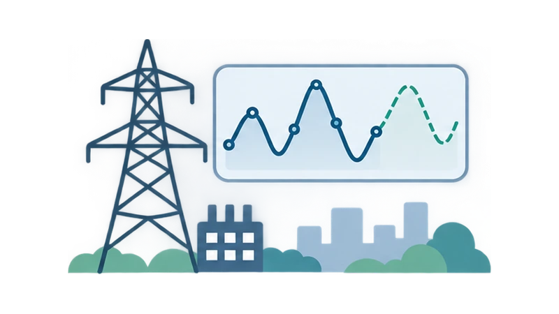
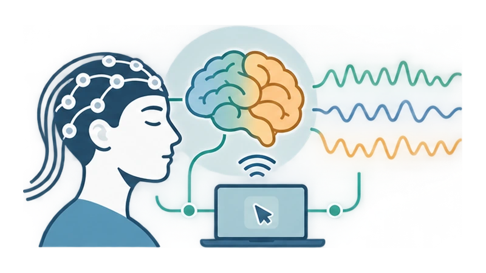
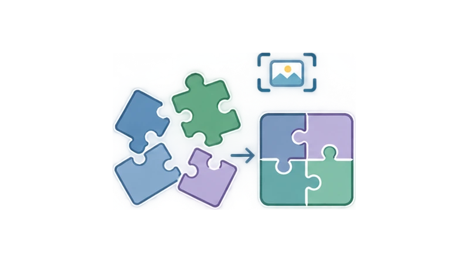
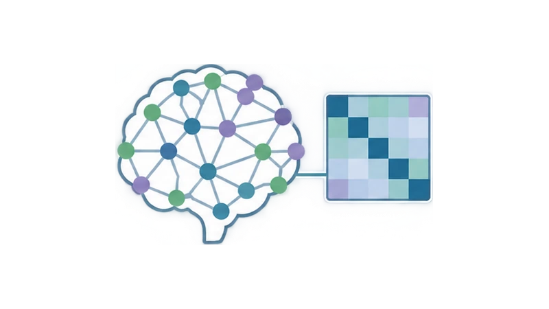
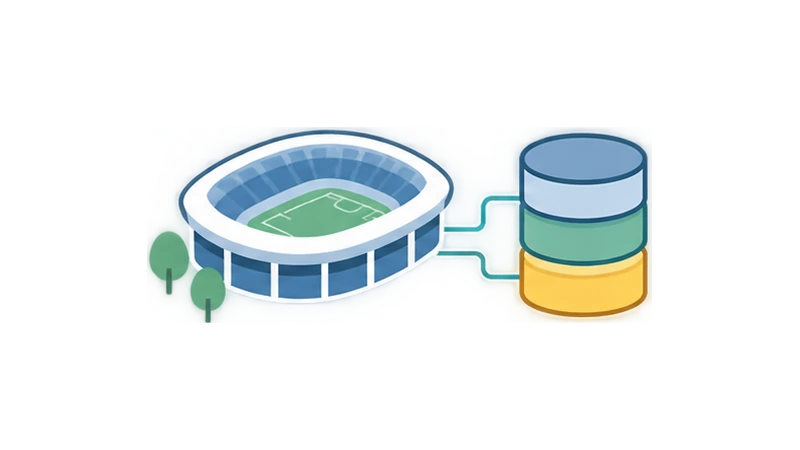

I’m a Master’s student at the University of Padova with a strong interest in applied AI, machine learning and data science. My academic projects combine model development, signal processing, computer vision and experimental evaluation to address engineering problems.

MZSelected academic projects, from model development and experimental evaluation to computer vision and data engineering.





Academic background, technical focus, and personal interests.
I am a Master’s student in ICT for Internet and Multimedia at the University of Padova (Life and Health curriculum), with all graduate coursework examinations completed. I am seeking a 4–6 month curricular internship in AI, machine learning, computer vision or data science, as part of my Master’s thesis, ideally in an applied research or R&D environment. My Bachelor’s degree in Information Engineering included a thesis on modeling and control of convertiplane flight dynamics.
My interests lie at the intersection of artificial intelligence, engineering and applied mathematics. I enjoy understanding how algorithms work, designing experiments, comparing different approaches and investigating their limitations.
When I'm not coding, I enjoy working on hands-on DIY and hardware projects, home improvement, tending my collection of houseplants, strength training, and planning my next trip.
Let's get in touch.
I am currently seeking a 4–6 month curricular internship for my Master’s thesis in AI, machine learning, computer vision or data science. I would be happy to discuss potential thesis projects and R&D opportunities.